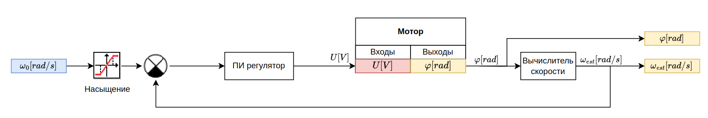
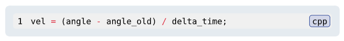
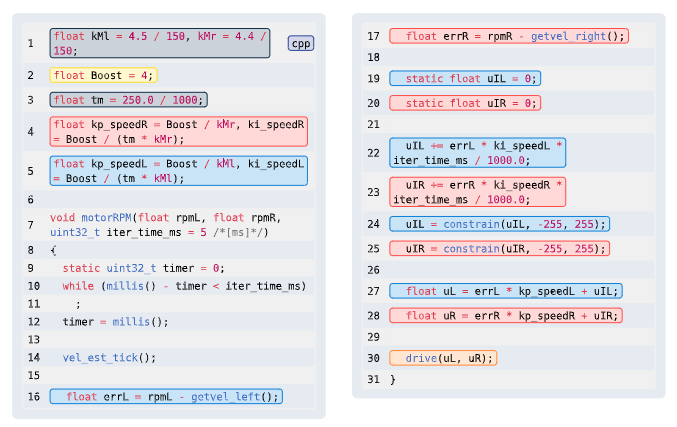
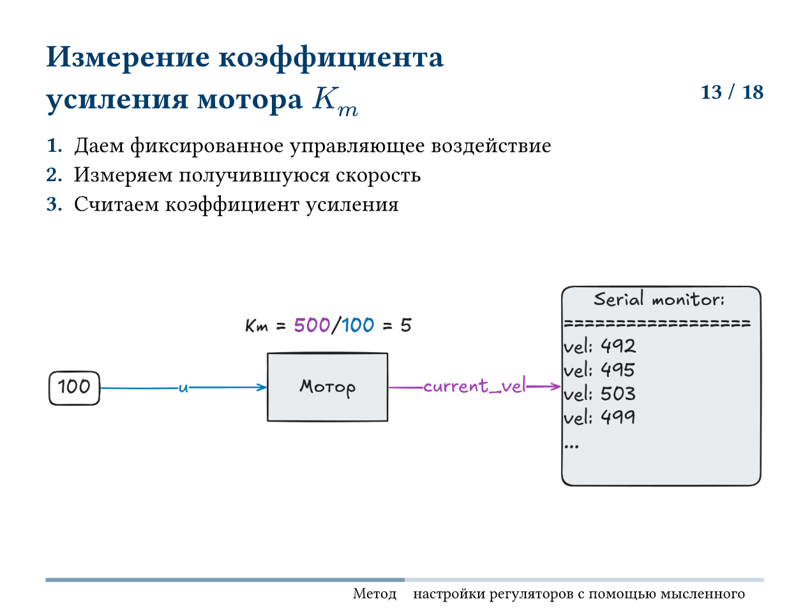
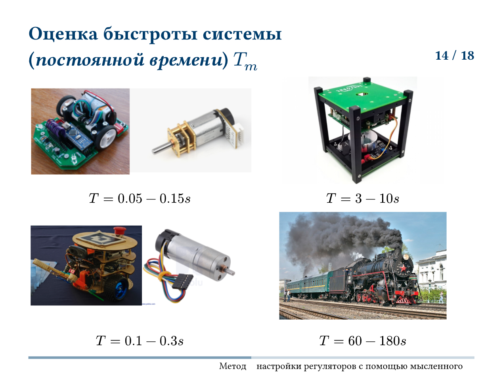
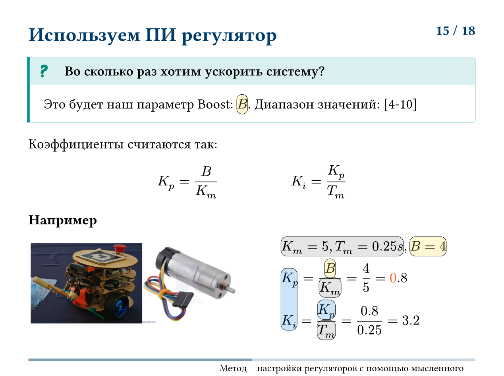
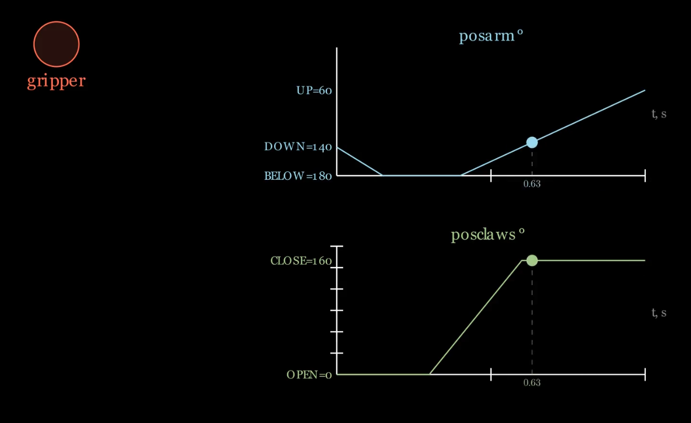

Прошивка микроконтроллера
Робот управляется контроллером Arduino Uno, подключенным по протоколу UART к Raspberry Pi 4B. Является уровнем Контроллера трехуровневой архитектуры.
Задачи контроллера
- Замыкание ПИ регуляторов скорости моторов
- Управление сервоприводами захвата
- Расчет локальной одометрии
- Считывание датчиков и пересылка их наверх
Интерфейс взаимодействия
Для управления роботом определен протокол типа запрос-ответ. Частота обмена Arduino-Raspberry соответствует частоте работы Секвенсора и составляет 10Гц.
Протокол обмена:
Rpi-Arduino:
Обычное управление:
|0x01|left_motor_speed:float|right_motor_speed:float|gripper:byte|checksum:byte|
11 bytes
Arduino-Rpi:
Ответ на обычное управление:
|0x01|x:float|y:float|theta:float|usik_left:byte|usik_right:byte|checksum:byte|
16 bytes
Управление моторами

Вычислитель скорости

ПИ регуляторы скорости

Настройка коэффициентов
Метод мысленного эксперимента и подбора.



Локальная одометрия
float x = 0.0, y = 0, theta = 0;
float dist_i = 0.0, theta_i = 0.0;
void odom() {
static int64_t old_encL = 0;
static int64_t old_encR = 0;
float velL = (enc_get_tick_L() - old_encL) / Ts_s;
float velR = -(enc_get_tick_R() - old_encR) / Ts_s;
old_encL = enc_get_tick_L();
old_encR = enc_get_tick_R();
float vel = (velL + velR) / 2;
if (fabs(gyro()) > 0.04)
theta_i = gyro();
else
theta_i = 0;
float k = 0.2 / 500;
x += k * vel * cos(theta) * Ts_s;
y += k * vel * sin(theta) * Ts_s;
theta += theta_i * Ts_s;
}
Управление сервоприводами
if (gripper_form_rpi())
{
t += t_one_it;
t2 += t_one_it / want_t_claws;
}
else
{
t -= 0.5 * t_one_it;
t2 -= 2 * t_one_it / want_t_claws;
}
t = constrain(t, 0, 1);
t2 = constrain(t2, 0, 1);
if (t < START_BELOW_TIME) {
posarm = DOWN;
} else if (t < BELOW_TIME) {
posarm = fmap(t, START_BELOW_TIME, BELOW_TIME, DOWN, BELOW);
} else {
posarm = constrain(fmap(t, (1 - want_t_claws), 1, BELOW, UP), UP, BELOW);
}
posclaws = constrain(fmap(t2, 0.5, 1, OPEN, CLOSE), OPEN, CLOSE);
Программирование циклограм движения сервоприводов захвата
